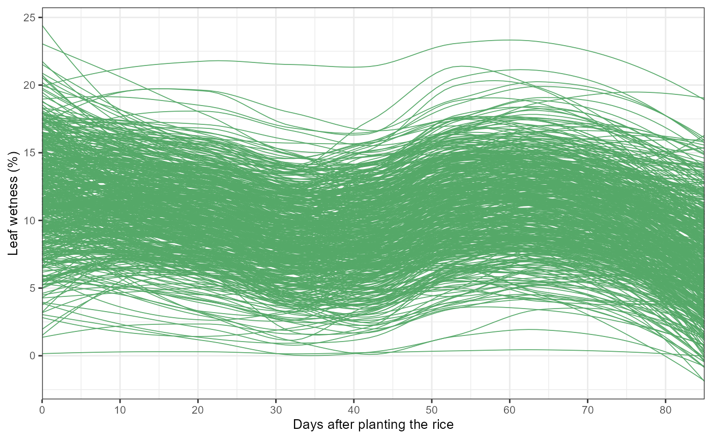
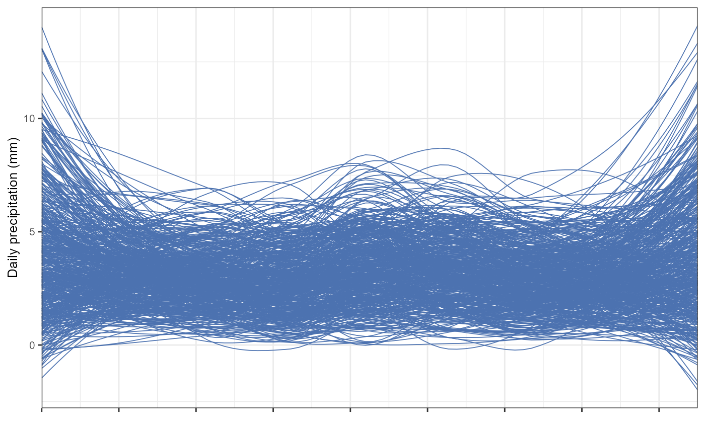
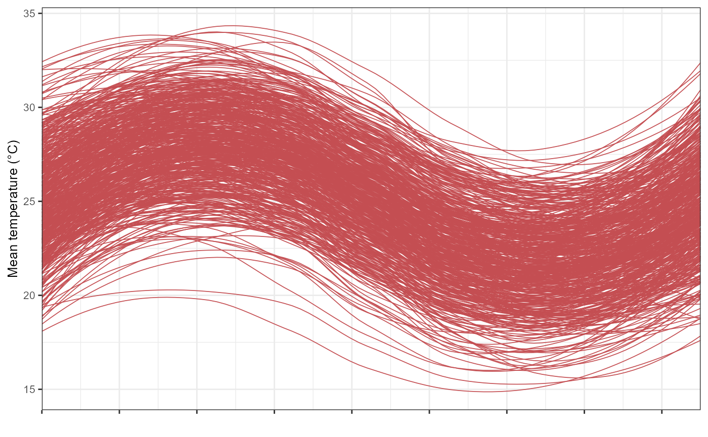

What does EpiExposure do?
EpiExposure provides a standardized workflow for
constructing, fitting, interpreting, and simulating distributed
exposure-lag models in plant disease epidemiology.
The package helps users:
- define nonlinear exposure-lag structures;
- fit distributed lag nonlinear models;
- quantify lag-specific, period-specific, and cumulative effects;
- evaluate complete exposure histories;
- predict expected disease outcomes;
- simulate alternative exposure scenarios;
- estimate yield and economic losses.
Unlike conventional window-based approaches, EpiExposure
treats the complete environmental history preceding disease assessment
as the epidemiological exposure unit.
What you will learn. This tutorial shows how to organize longitudinal epidemiological data, define exposure-lag structures, fit a first DLNM, and predict an expected disease outcome from a complete exposure history.
The EpiExposure workflow
A basic analysis follows five stages:
- organize complete exposure histories;
- define the exposure-response and lag-response basis functions;
- collapse each history into one epidemic-level design row;
- prepare the response and fit the model;
- use the fitted model for interpretation, prediction, or simulation.
This vignette introduces the basic workflow but stops before detailed effect interpretation. Lag-specific, period-specific, and cumulative effects are covered in the Understanding Effects vignette.
Organizing exposure histories
EpiExposure expects longitudinal data in which each row
represents one observation within an epidemic history.
At minimum, the dataset must contain:
- an epidemic identifier, such as
epi_id; - a numeric temporal index, such as
time; - one or more exposure variables;
- one final response associated with each epidemic.
In the example dataset:
-
epi_ididentifies independent epidemic histories; -
timeorders observations chronologically; -
tmean,rain, andwetnessare environmental exposures; -
yis the final disease response.
The temporal index begins at the earliest observation and ends at the disease assessment:
time 0 → earliest exposure observation → maximum lag
time 85 → disease assessment → lag 0Every epidemic must contain the same complete and regularly spaced
exposure history. With max_lag = 85, each epidemic
requires:
observations for every fitted exposure.
data(
"epi_data",
package = "EpiExposure"
)Inspecting the example dataset
The example contains complete environmental histories for multiple epidemics.
| epi_id | time | tmean | rain | wetness | y |
|---|---|---|---|---|---|
| 1 | 0 | 21.96 | 0.00 | 8.83 | 0.33 |
| 1 | 1 | 21.47 | 0.00 | 11.86 | 0.33 |
| 1 | 2 | 21.53 | 5.38 | 12.49 | 0.33 |
| 1 | 3 | 21.76 | 14.59 | 12.30 | 0.33 |
| 1 | 4 | 20.83 | 0.00 | 11.41 | 0.33 |
| 1 | 5 | 23.03 | 8.24 | 7.98 | 0.33 |
| 1 | 6 | 23.89 | 4.69 | 10.84 | 0.33 |
| 1 | 7 | 23.14 | 12.30 | 8.58 | 0.33 |
| 1 | 8 | 25.32 | 4.14 | 10.61 | 0.33 |
| 1 | 9 | 25.99 | 1.91 | 14.10 | 0.33 |
Before modeling, verify that every epidemic contains the required number of observations:
For max_lag = 85, the expected result is 86 observations
per epi_id.
Visualizing exposure histories
Visual inspection can reveal temporal trends, unusual exposure profiles, limited variation, and missing observations.
wetness_plot = epi_data |>
ggplot(aes(time,wetness, group = epi_id))+
geom_smooth(se = F, color = "#55A868",linewidth = 0.3)+
theme_bw()+
labs(x = "Days after planting the rice",
y = "Leaf wetness (%)")+
scale_x_continuous(limits = c(0,85), expand = c(0,0),
breaks = pretty(epi_data$time, n = 8))+
theme(text = element_text(size = 10))
wetness_plot
rain_plot = epi_data |>
ggplot(aes(time,rain, group = epi_id))+
geom_smooth(se = F, color = "#4C72B0",linewidth = 0.3)+
theme_bw()+
labs(x = "",
y = "Daily precipitation (mm)")+
scale_x_continuous(limits = c(0,85), expand = c(0,0),
breaks = pretty(epi_data$time, n = 8))+
theme(axis.text.x = element_blank(),
text = element_text(size = 10))
rain_plot
tmean_plot = epi_data |>
ggplot(aes(time,tmean, group = epi_id))+
geom_smooth(se = F, color = "#C44E52",linewidth = 0.3)+
theme_bw()+
labs(x = "",
y = "Mean temperature (°C)")+
scale_x_continuous(limits = c(0,85), expand = c(0,0),
breaks = pretty(epi_data$time, n = 8))+
theme(axis.text.x = element_blank(),
text = element_text(size = 10))
tmean_plot
The objective is not to identify exposure effects visually. These plots only describe the observed histories. Effect estimation requires the DLNM model.Defining exposure-lag structures
The first modeling step is to define the nonlinear exposure-response and lag-response basis functions.
cb <- define_exposures(
data = epi_data,
vars = c(
"tmean",
"rain",
"wetness"
),
max_lag = 85,
df_var = 3,
df_lag = 2
)Here:
-
varsidentifies the exposures included in the DLNM; -
max_lag = 85defines the retrospective lag window; -
df_var = 3controls exposure-response flexibility; -
df_lag = 2controls lag-response flexibility.
The resulting object stores the fitted basis definitions required for model construction and downstream prediction.
Exposure variables only. Coordinates, treatment
groups, blocks, years, and other identifiers should not be included in
vars. They can be preserved separately by
build_design() when needed for random or spatial
effects.
Building the epidemic-level design
build_design() transforms each complete longitudinal
history into one epidemic-level row containing the cross-basis
predictors.
dat <- build_design(
data = epi_data,
cb_templates = cb)The original exposure columns are represented by canonical cross-basis columns such as:
cb_tmean_1, cb_tmean_2, ...
cb_rain_1, cb_rain_2, ...
cb_wetness_1, cb_wetness_2, ...The coefficients of these columns should not be interpreted individually. Together, they reconstruct the nonlinear exposure-lag-response association.
Inspect the resulting design:
| epi_id | cb_tmean_1 | cb_tmean_2 | cb_tmean_3 | cb_tmean_4 | cb_tmean_5 | cb_tmean_6 | cb_rain_1 | cb_rain_2 | cb_rain_3 | cb_rain_4 | cb_rain_5 | cb_rain_6 | cb_wetness_1 | cb_wetness_2 | cb_wetness_3 | cb_wetness_4 | cb_wetness_5 | cb_wetness_6 | y |
|---|---|---|---|---|---|---|---|---|---|---|---|---|---|---|---|---|---|---|---|
| 1 | 5.765 | 5.545 | 21.801 | 0.515 | -11.524 | 0.481 | 0.657 | -0.839 | 16.376 | 2.138 | -6.935 | -1.236 | 4.869 | 0.929 | 23.264 | 1.555 | -12.855 | -0.774 | 0.330 |
| 2 | 5.838 | 7.070 | 20.565 | 0.978 | -10.660 | 0.423 | 1.974 | 0.311 | 14.655 | 1.071 | -4.947 | 0.128 | -2.937 | 0.300 | 21.177 | 2.585 | -12.003 | -1.463 | 0.071 |
| 3 | 6.950 | 4.678 | 21.307 | 1.259 | -10.660 | 0.061 | 1.180 | 0.384 | 5.205 | 0.195 | -1.241 | 0.248 | 12.899 | 1.294 | 20.370 | 1.219 | -8.147 | 0.539 | 0.190 |
| 4 | 7.156 | 8.038 | 20.828 | 0.221 | -10.864 | 0.944 | 1.550 | -0.018 | 7.855 | -1.201 | -2.977 | 0.685 | -1.550 | 1.641 | 17.718 | 2.848 | -9.977 | -1.521 | 0.036 |
| 5 | 6.736 | 6.837 | 20.943 | -0.178 | -10.292 | 1.655 | 0.911 | -0.435 | 7.176 | -1.187 | -2.442 | 0.382 | 1.169 | -0.367 | 21.088 | 1.808 | -11.570 | -0.933 | 0.117 |
| 6 | 6.861 | 5.114 | 21.562 | 1.274 | -11.556 | -0.268 | 1.562 | 0.105 | 10.663 | 1.816 | -3.284 | -0.974 | 3.093 | 4.926 | 21.770 | 1.654 | -11.816 | -0.419 | 0.126 |
Preparing the disease response
The response must be prepared for the distribution used in the model.
dat <- prepare_response(
data = dat,
response = "y",
family = "beta"
)The Beta family is appropriate when the response is a continuous proportion strictly between 0 and 1.
Other supported families should be selected according to the response scale, for example:
-
binomialfor a Bernoulli response coded as 0 or 1; -
poissonfor non-negative counts; -
negative_binomialfor overdispersed counts; -
gammafor positive continuous responses; -
gaussianfor approximately continuous, unbounded responses.
Fitting the first DLNM
The prepared design can now be fitted with one of the supported modeling engines.
fit <- fit_epidlnm(
data = dat,
model_engine = "glmmTMB",
family = "beta",
random_effect = NULL,
epiexposure_spec = attr(
cb,
"spec"
)
)This model estimates a population-level association between the complete histories of temperature, rainfall, and leaf wetness and the final disease response.
summary(fit)
#> Family: beta ( logit )
#> Formula:
#> y_model ~ 1 + cb_tmean_1 + cb_tmean_2 + cb_tmean_3 + cb_tmean_4 +
#> cb_tmean_5 + cb_tmean_6 + cb_rain_1 + cb_rain_2 + cb_rain_3 +
#> cb_rain_4 + cb_rain_5 + cb_rain_6 + cb_wetness_1 + cb_wetness_2 +
#> cb_wetness_3 + cb_wetness_4 + cb_wetness_5 + cb_wetness_6
#> Data: dat
#>
#> AIC BIC logLik -2*log(L) df.resid
#> -1375.4 -1290.4 707.7 -1415.4 500
#>
#>
#> Dispersion parameter for beta family (): 29.7
#>
#> Conditional model:
#> Estimate Std. Error z value Pr(>|z|)
#> (Intercept) -3.475218 0.947903 -3.666 0.000246 ***
#> cb_tmean_1 0.118230 0.014595 8.101 5.46e-16 ***
#> cb_tmean_2 -0.207029 0.027422 -7.550 4.36e-14 ***
#> cb_tmean_3 -0.062001 0.039492 -1.570 0.116421
#> cb_tmean_4 -0.324065 0.100821 -3.214 0.001308 **
#> cb_tmean_5 -0.091731 0.031843 -2.881 0.003968 **
#> cb_tmean_6 0.016912 0.054302 0.311 0.755467
#> cb_rain_1 0.217255 0.039357 5.520 3.39e-08 ***
#> cb_rain_2 -0.357518 0.050983 -7.013 2.34e-12 ***
#> cb_rain_3 0.239871 0.025436 9.431 < 2e-16 ***
#> cb_rain_4 -0.273807 0.039372 -6.954 3.54e-12 ***
#> cb_rain_5 0.160458 0.057216 2.804 0.005041 **
#> cb_rain_6 -0.034856 0.080037 -0.435 0.663201
#> cb_wetness_1 0.110230 0.004315 25.545 < 2e-16 ***
#> cb_wetness_2 -0.037250 0.016298 -2.285 0.022284 *
#> cb_wetness_3 0.074292 0.015282 4.861 1.17e-06 ***
#> cb_wetness_4 -0.039607 0.048578 -0.815 0.414877
#> cb_wetness_5 0.090457 0.009308 9.718 < 2e-16 ***
#> cb_wetness_6 -0.055629 0.029369 -1.894 0.058207 .
#> ---
#> Signif. codes: 0 '***' 0.001 '**' 0.01 '*' 0.05 '.' 0.1 ' ' 1The individual cb_* coefficients are components of the
cross-basis expansion. Their signs and
-values
should not be interpreted as isolated epidemiological effects.
The fitted exposure-lag surface must instead be reconstructed into quantities such as lag-specific, period-specific, and cumulative effects. That process is introduced in the Understanding Effects vignette.
Predicting one complete exposure history
A fitted model can also estimate the expected disease outcome associated with a complete hypothetical exposure history.
prediction <- predict_outcomes(
fit = fit,
profiles = list(
tmean = rep(
25,
86
),
rain = rep(
5,
86
),
wetness = rep(
15,
86
)
)
)
prediction
#> prediction
#> 1 0.9777891Each exposure profile contains exactly 86 chronologically ordered observations, matching:
max_lag + 1The resulting prediction represents the expected population-level disease response for the complete exposure history. It is not a newly simulated observation.
Where to go next
You have now completed the basic EpiExposure
workflow:
- loaded longitudinal epidemic data;
- inspected complete exposure histories;
- defined the exposure-lag basis;
- constructed the epidemic-level design;
- prepared the response;
- fitted a DLNM;
- predicted an expected disease outcome.
Continue with the Understanding Effects vignette to learn how to:
- interpret lag-specific effects;
- define epidemiological periods;
- calculate cumulative effects;
- select meaningful reference exposures;
- visualize uncertainty across the exposure-lag surface.
More advanced topics, including alternative modeling engines, random effects, spatial Matérn structures, Bayesian estimation, and identifiability diagnostics, are covered in the Advanced Topics vignette.